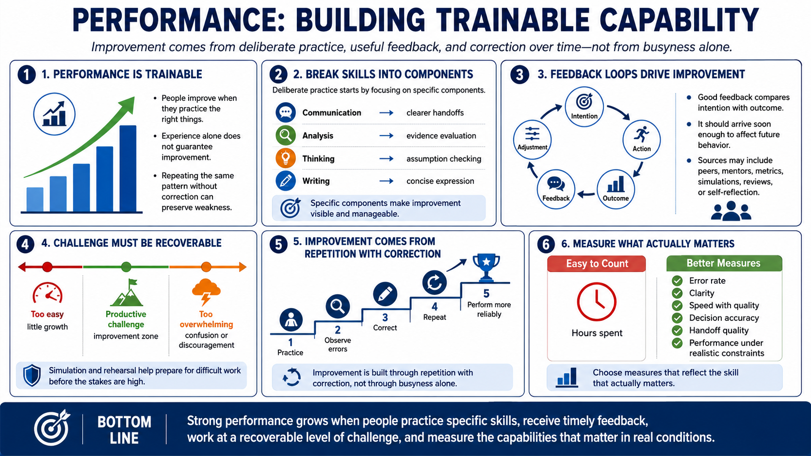

Skill Development and Deliberate Practice
Connecting to LMS... Progress: in progress

Narration
Performance is trainable capability. People improve when they practice the right things, receive useful feedback, and correct errors over time. Experience alone does not guarantee improvement. Someone can repeat the same pattern for years without getting better if the work never exposes weak points or gives them a way to adjust.
Deliberate practice focuses on specific components of a skill. Instead of vaguely trying to get better at communication, a person might practice clearer handoffs. Instead of broadly trying to become a better analyst, they might practice evidence evaluation, assumption checking, or concise writing. Breaking skills into components makes improvement more visible and manageable.
Feedback loops are essential. Good feedback compares intention with outcome and arrives soon enough to influence future behavior. It can come from peers, mentors, metrics, simulation, rehearsal, review sessions, or self-reflection. The goal is not criticism for its own sake. The goal is correction that helps future performance become more reliable.
Challenge should be balanced with recoverability. Practice that is too easy does not stretch capability. Practice that is too overwhelming can create confusion or discouragement. Simulation and rehearsal are useful because they let people prepare for difficult work before the stakes are high. Improvement is built through repetition with correction, not through busyness alone.
Deliberate practice also requires selecting the right measure. Hours spent are easy to count, but they do not always show improvement. Better measures focus on error rate, clarity, speed with quality, decision accuracy, handoff quality, or the ability to perform under realistic constraints. The measure should reflect the skill that actually matters.